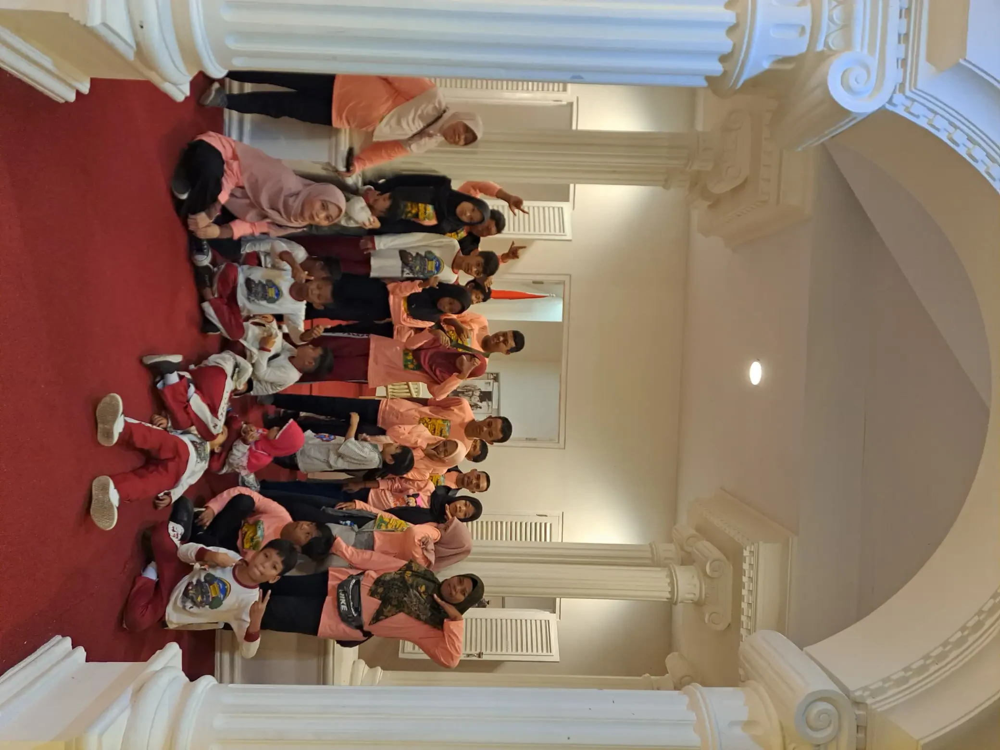

Jawaban singkat: SLB tuna rungu, yang dalam penamaan lama dikenal sebagai SLB-B, adalah sekolah luar biasa yang melayani anak dengan hambatan pendengaran dari jenjang TKLB, SDLB, SMPLB, sampai SMALB atau SMKLB. Sekolah ini memberi program kekhususan seperti pengembangan komunikasi dan latihan persepsi bunyi, serta dapat memakai bahasa isyarat. Sebelum memilih, cek izin dan akreditasi sekolah lewat Data Referensi Kemendikdasmen, lalu kunjungi sekolahnya langsung.
Daftar Isi
- Apa itu SLB tuna rungu (SLB-B)?
- Jenjang pendidikan di SLB tuna rungu
- Kurikulum dan program kekhususan
- Pendekatan komunikasi: lisan, isyarat, BISINDO, dan SIBI
- SLB-B atau sekolah inklusi?
- Cara memilih SLB tuna rungu
- Cara mencari data SLB resmi
- Pendaftaran dan dokumen yang disiapkan
- Peran orang tua selama anak bersekolah
- Pertanyaan yang sering diajukan
Apa Itu SLB Tuna Rungu (SLB-B)?
SLB tuna rungu adalah satuan pendidikan khusus untuk peserta didik yang mengalami hambatan pendengaran. Peraturan Pemerintah Nomor 17 Tahun 2010 menyebut tunarungu sebagai salah satu kelompok peserta didik berkelainan yang berhak atas pendidikan khusus, bersama tunanetra, tunawicara, tunagrahita, tunadaksa, dan kelompok lain. Tujuannya mengembangkan potensi anak secara optimal sesuai kemampuannya.
Di masyarakat, sekolah ini sering disebut SLB-B. Huruf B adalah kode kekhususan dalam penamaan SLB yang sudah lama dipakai untuk layanan tunarungu, berdampingan dengan kode lain seperti A untuk tunanetra dan C untuk tunagrahita. Kode ini membantu orang tua mengenali fokus layanan, tetapi bukan jaminan. Ada sekolah bernama SLB-B yang juga menerima kekhususan lain, dan ada SLB tanpa huruf apa pun yang memiliki kelas tunarungu.
Hal ini wajar karena PP 17 Tahun 2010 Pasal 133 membolehkan satuan pendidikan khusus diselenggarakan secara terintegrasi antarjenjang dan antarjenis kelainan. Jadi, pertanyaan yang paling penting bukan sekadar huruf di papan nama, melainkan apakah sekolah punya guru, kelas, dan cara komunikasi yang cocok untuk anak tunarungu. Bila Anda masih mempelajari kondisi anak, baca juga pengertian tuna rungu dan penjelasan umum tentang SLB.

Jenjang Pendidikan di SLB Tuna Rungu
PP 17 Tahun 2010 Pasal 133 mengatur bentuk satuan pendidikan khusus formal. Untuk anak usia dini bentuknya taman kanak-kanak luar biasa. Untuk pendidikan dasar ada sekolah dasar luar biasa dan sekolah menengah pertama luar biasa. Untuk pendidikan menengah ada sekolah menengah atas luar biasa dan sekolah menengah kejuruan luar biasa. Permendikbudristek Nomor 48 Tahun 2023 juga menyebut TKLB, SDLB, SMPLB, SMALB, dan SMKLB sebagai satuan pendidikan yang wajib memperhatikan akomodasi yang layak.
Tidak semua SLB membuka semua jenjang. Saat diperiksa pada 11 Oktober 2026, halaman program atau layanan SLB di Data Referensi Kemendikdasmen mencatat untuk D.I. Yogyakarta 27 layanan TKLB, 80 SDLB, 79 SMPLB, dan 77 SMLB, dengan total 263 layanan. Angka ini menghitung layanan per jenjang, bukan jumlah gedung sekolah, dan tidak dipilah per jenis kekhususan. Datanya dapat berubah sewaktu-waktu.
| Jenjang | Padanan jenjang reguler | Hal yang perlu ditanyakan ke sekolah |
|---|---|---|
| TKLB | Taman kanak-kanak | Cara sekolah membangun bahasa awal, kebiasaan memakai alat bantu dengar, dan keterlibatan orang tua di kelas |
| SDLB | Sekolah dasar | Pendekatan komunikasi, cara mengajar membaca dan menulis, serta jadwal program kekhususan |
| SMPLB | Sekolah menengah pertama | Penyesuaian materi akademik, dukungan bahasa tulis, dan kegiatan sosial di luar kelas |
| SMALB atau SMKLB | SMA atau SMK | Program keterampilan, persiapan kerja atau studi lanjut, dan kemitraan dengan dunia usaha |
Untuk anak yang pindah jalur, misalnya dari SDLB ke SMP reguler, tanyakan sejak awal bagaimana sekolah tujuan menilai kesiapan dan dokumen apa yang dibutuhkan. Penjelasan tentang status kelulusan ada di artikel ijazah SLB setara apa.
Kurikulum dan Program Kekhususan
SLB mengikuti kurikulum nasional yang berlaku, lalu menyesuaikannya dengan kebutuhan peserta didik. Untuk anak tunarungu, penyesuaian terbesar biasanya ada pada akses bahasa. Banyak konsep pelajaran disampaikan lewat bahasa, sehingga anak yang belum memiliki bahasa yang kuat perlu bantuan visual, isyarat, tulisan, dan pengulangan dalam konteks nyata.
Selain mata pelajaran umum, SLB untuk anak tunarungu biasanya memiliki program kekhususan. Di banyak sekolah, program ini dikenal dengan nama seperti Pengembangan Komunikasi, Persepsi Bunyi, dan Irama atau bina komunikasi. Nama, jam pelajaran, dan isinya dapat berbeda antarsekolah, jadi mintalah sekolah menunjukkan dokumen kurikulum satuan pendidikannya.
Bina komunikasi
Bina komunikasi melatih anak memahami dan menyampaikan pesan. Isinya dapat mencakup kosakata, struktur kalimat, membaca ujaran, latihan bicara, isyarat, dan bahasa tulis. Targetnya anak mampu meminta, bertanya, menolak, bercerita, dan memahami instruksi sesuai cara komunikasi yang paling efektif baginya.
Persepsi bunyi dan irama
Latihan persepsi bunyi membantu anak yang masih memiliki sisa pendengaran untuk menyadari ada atau tidaknya bunyi, membedakan bunyi, dan mengenali pola atau irama. Kegiatannya sering memakai alat musik sederhana, getaran, dan permainan. Manfaatnya berbeda pada tiap anak, bergantung pada tingkat pendengaran dan alat bantu yang dipakai.
Program kekhususan sebaiknya dituangkan dalam rencana belajar individual agar target dan kemajuannya terukur. Panduan menyusunnya ada di artikel program pembelajaran individual, sedangkan cara menilai kebutuhan awal dibahas di asesmen anak berkebutuhan khusus.

Pendekatan Komunikasi: Lisan, Isyarat, BISINDO, dan SIBI
Anak tunarungu tidak seragam. Panduan Pelaksanaan Pendidikan Inklusif dari Kemendikbudristek membedakan kelompok kurang dengar dan tuli, serta menegaskan bahwa anak yang memakai alat bantu dengar tetap membutuhkan penyesuaian layanan pendidikan. WHO juga menjelaskan bahwa orang dengan gangguan pendengaran ringan sampai berat umumnya berkomunikasi lewat bahasa lisan dan terbantu alat dengar serta teks, sedangkan sebagian orang Tuli memakai bahasa isyarat.
Karena itu, sekolah dapat memakai pendekatan yang berbeda. Ada yang menekankan bahasa lisan dan membaca ujaran, ada yang memakai bahasa isyarat, dan banyak yang menggabungkan keduanya dengan tulisan serta media visual. Dua sistem isyarat yang paling sering dibicarakan di Indonesia adalah SIBI dan BISINDO. Perbedaan dan sejarah keduanya dibahas di BISINDO adalah dan bahasa isyarat tuna rungu.
Regulasi memberi pegangan yang jelas. PP Nomor 13 Tahun 2020 Pasal 15 menyebut bentuk akomodasi yang layak bagi peserta didik penyandang disabilitas rungu, antara lain komunikasi dalam pembelajaran dan evaluasi dengan cara yang sesuai pilihan masing-masing peserta didik, pendampingan juru bahasa isyarat atau juru catat bila pendidik tidak dapat berbahasa isyarat, serta fleksibilitas bentuk tugas dan evaluasi.
Saat berkunjung, tanyakan bahasa apa yang dipakai guru di kelas, apakah guru lancar berisyarat, dan bagaimana sekolah melibatkan orang tua agar komunikasi di rumah sejalan. Tips praktis sehari-hari tersedia di cara berkomunikasi dengan anak tuna rungu.
SLB-B atau Sekolah Inklusi?
Pilihan sekolah bukan soal mana yang lebih baik secara umum, tetapi mana yang paling sesuai untuk anak saat ini. Sebagian anak berkembang pesat di SLB karena seluruh lingkungan memakai bahasa yang sama. Sebagian lain cocok di sekolah inklusi bila sekolah siap memberi akomodasi. Pilihan juga boleh berubah seiring perkembangan anak.
| Aspek | SLB tuna rungu (SLB-B) | Sekolah reguler penyelenggara inklusi |
|---|---|---|
| Lingkungan bahasa | Guru dan teman umumnya terbiasa dengan kebutuhan komunikasi anak tunarungu | Mayoritas teman berkomunikasi secara lisan, anak perlu dukungan agar tidak tertinggal |
| Program kekhususan | Biasanya tersedia sebagai bagian dari jadwal sekolah | Bergantung pada guru pendamping khusus dan layanan pendukung yang ada |
| Ukuran kelas | Cenderung kecil sehingga guru dapat memberi perhatian lebih | Kelas lebih besar, perlu strategi seperti tempat duduk depan dan materi tertulis |
| Interaksi sosial | Anak bertemu teman dengan pengalaman yang mirip dan komunitas isyarat | Anak berbaur dengan teman sebaya yang lebih beragam |
| Hal yang perlu dicek | Jenjang yang dibuka, kompetensi guru, dan jarak dari rumah | Kesiapan guru, akomodasi yang layak, dan ketersediaan juru bahasa isyarat atau juru catat |
Untuk sekolah reguler, Permendikbudristek Nomor 48 Tahun 2023 mengatur penyediaan akomodasi yang layak dan pembentukan Unit Layanan Disabilitas. Tanyakan bagaimana sekolah menerapkannya. Pembahasan lebih lengkap ada di perbedaan sekolah inklusi dan SLB, pendidikan inklusi, dan anak ABK harus sekolah di mana.

Cara Memilih SLB Tuna Rungu
Memilih sekolah lebih mudah bila Anda memakai daftar periksa yang sama untuk setiap kandidat. Kunjungi minimal dua sekolah, datang saat jam belajar bila diizinkan, dan ajak anak bila memungkinkan. Reaksi anak terhadap suasana kelas sering memberi informasi yang tidak tertulis di brosur.
- Pastikan legalitas. Cek NPSN, status negeri atau swasta, dan nomor SK izin operasional di Data Referensi Kemendikdasmen.
- Lihat akreditasi. Status akreditasi tercantum di profil sekolah. Tanyakan juga kapan sekolah terakhir dinilai.
- Tanyakan layanan tunarungu secara spesifik. Berapa kelas atau rombongan belajar untuk anak tunarungu di jenjang yang Anda tuju, dan siapa gurunya.
- Nilai kompetensi komunikasi guru. Minta penjelasan pendekatan komunikasi dan, bila perlu, lihat guru berinteraksi dengan siswa.
- Cek dukungan alat bantu dengar. Tanyakan apakah guru terbiasa memeriksa alat bantu dengar, cara sekolah mengurangi kebisingan, dan apa yang dilakukan bila alat rusak saat jam sekolah.
- Perhatikan ruang kelas. Pencahayaan yang baik membantu anak membaca ujaran dan isyarat, sedangkan kelas yang bising menyulitkan pengguna alat dengar.
- Hitung akses dan transportasi. Jarak dan waktu tempuh memengaruhi kehadiran dan energi anak setiap hari.
- Tanyakan komunikasi dengan orang tua. Buku penghubung, pertemuan rutin, atau pelatihan bahasa isyarat untuk keluarga adalah tanda kemitraan yang baik.
Jangan ragu meminta waktu untuk berpikir setelah kunjungan. Sekolah yang baik akan menjawab pertanyaan dengan terbuka dan tidak menekan keluarga untuk segera mendaftar.
Cara Mencari Data SLB Resmi
Daftar SLB di internet sering tidak diperbarui. Sumber yang lebih dapat diandalkan adalah Data Referensi Kemendikdasmen di referensi.data.kemendikdasmen.go.id, yang dikelola Pusdatin Kemendikdasmen sebagai acuan sinkronisasi data pendidikan. Halaman ini menampilkan program atau layanan SLB per provinsi sampai tingkat kecamatan.
- Buka halaman program atau layanan SLB di Data Referensi Kemendikdasmen.
- Pilih provinsi, lalu kabupaten atau kota, lalu kecamatan tempat Anda tinggal atau kecamatan di sekitarnya.
- Perhatikan kolom TKLB, SDLB, SMPLB, dan SMLB untuk melihat jenjang yang dibuka setiap sekolah.
- Klik NPSN sekolah untuk membuka profilnya. Profil memuat status, akreditasi, nomor SK izin operasional, yayasan penaung untuk sekolah swasta, alamat, kontak, dan koordinat peta.
- Bila sudah tahu nama atau NPSN sekolah, gunakan kotak Cari Sekolah atau NPSN di bagian atas halaman.
- Hubungi sekolah untuk memastikan layanan bagi anak tunarungu, kuota, dan jadwal pendaftaran.
Satu catatan penting: profil sekolah di Data Referensi tidak selalu menyebutkan jenis kekhususan yang dilayani. Karena itu, langkah terakhir tetap wajib dilakukan. Kemendikdasmen juga menyediakan portal Sekolah Kita di sekolah.data.kemendikdasmen.go.id untuk melihat profil dan peta sekolah. Untuk mencari sekolah di sekitar rumah, baca panduan mencari SLB terdekat.

Pendaftaran dan Dokumen yang Disiapkan
Banyak orang tua mengira semua sekolah mengikuti jalur Sistem Penerimaan Murid Baru (SPMB). Permendikdasmen Nomor 3 Tahun 2025 menyebut SPMB dilaksanakan oleh TK, SD, SMP, SMA, dan SMK. Pasal 7 ayat (2) mengecualikan jalur penerimaan murid baru, yaitu domisili, afirmasi, prestasi, dan mutasi, untuk satuan pendidikan yang menyelenggarakan pendidikan khusus. Jadi, tata cara pendaftaran SLB perlu ditanyakan langsung ke sekolah atau dinas pendidikan setempat.
Bila anak mendaftar ke sekolah reguler, aturan yang sama memberi ruang lewat Jalur Afirmasi, yang diperuntukkan bagi calon murid dari keluarga ekonomi tidak mampu dan calon murid penyandang disabilitas. Persyaratan khususnya adalah kartu penyandang disabilitas dari kementerian di bidang sosial atau surat keterangan dari dokter atau dokter spesialis. Pasal 15 juga mengecualikan persyaratan usia bagi calon murid penyandang disabilitas.
Dokumen yang umumnya diminta saat mendaftar ke SLB atau sekolah reguler meliputi:
- Akta kelahiran dan kartu keluarga.
- Identitas orang tua atau wali.
- Rapor atau ijazah jenjang sebelumnya, bila ada.
- Kartu penyandang disabilitas atau surat keterangan dokter tentang kondisi pendengaran anak.
- Hasil pemeriksaan pendengaran dan laporan asesmen atau terapi yang sudah pernah dilakukan.
- Catatan tentang alat bantu dengar atau implan yang dipakai, termasuk kontak layanan perawatannya.
Persyaratan persis bisa berbeda di tiap sekolah dan daerah. Informasi pengurusan kartu ada di kartu disabilitas dan cara membuat kartu disabilitas.
Peran Orang Tua Selama Anak Bersekolah
Sekolah hanya mengisi sebagian hari anak. Bahasa tumbuh paling kuat bila anak mendapat akses komunikasi yang konsisten di rumah. Pelajari cara komunikasi yang dipakai sekolah, termasuk isyarat dasar bila sekolah memakainya, supaya anak tidak harus berganti sistem setiap pulang. Libatkan saudara dan kakek nenek sejauh mereka mampu.
Jaga kebiasaan sederhana yang mendukung belajar. Pastikan alat bantu dengar terpasang dan berfungsi sebelum berangkat, bacakan atau ceritakan kegiatan harian dengan media visual, dan tanyakan pengalaman anak di sekolah dengan pertanyaan pendek. Bila ada kekhawatiran tentang perkembangan bicara, diskusikan dengan sekolah dan tenaga profesional. Gambaran layanannya ada di terapi wicara.
Hadiri pertemuan sekolah dan sampaikan perubahan yang Anda lihat di rumah. Kemitraan seperti ini membuat target belajar lebih realistis. Panduan umumnya dibahas di peran orang tua dalam pendidikan inklusi. Bila Anda masih bertanya tentang peluang perbaikan pendengaran, artikel apakah tuna rungu bisa sembuh dapat membantu, dan keputusan medis tetap dibicarakan dengan dokter.
Setiap anak tunarungu berhak tumbuh dengan bahasa, ilmu, dan rasa percaya diri. Semoga Allah memudahkan setiap langkah orang tua dalam memilih tempat belajar terbaik bagi buah hatinya.
Pertanyaan yang Sering Diajukan
Apa itu SLB tuna rungu?
SLB tuna rungu adalah sekolah luar biasa yang melayani peserta didik dengan hambatan pendengaran. Dalam penamaan yang masih banyak dipakai, sekolah ini dikenal sebagai SLB-B. Banyak SLB juga melayani lebih dari satu jenis kekhususan, jadi pastikan sekolah benar-benar memiliki layanan untuk anak tunarungu.
Apa arti huruf B pada SLB-B?
Huruf B adalah kode kekhususan dalam penamaan SLB yang lazim dipakai untuk layanan anak tunarungu, berdampingan dengan kode lain seperti A untuk tunanetra dan C untuk tunagrahita. Nama sekolah tidak selalu memakai huruf ini, sehingga layanan yang tersedia tetap perlu ditanyakan langsung ke sekolah.
Jenjang apa saja yang tersedia di SLB tuna rungu?
Jenjangnya mengikuti pendidikan khusus formal, yaitu TKLB, SDLB, SMPLB, dan jenjang menengah seperti SMALB atau SMKLB. Tidak semua sekolah membuka seluruh jenjang, jadi cek data program atau layanan sekolah di Data Referensi Kemendikdasmen.
Apakah anak tunarungu wajib sekolah di SLB?
Tidak. Anak tunarungu dapat belajar di SLB atau di sekolah reguler yang menyelenggarakan pendidikan inklusif. Pilihan terbaik bergantung pada cara komunikasi anak, dukungan yang tersedia, kesiapan guru, jarak, dan pertimbangan keluarga.
Bagaimana cara mengecek SLB yang resmi?
Buka Data Referensi Kemendikdasmen, pilih menu program atau layanan Sekolah Luar Biasa, lalu telusuri provinsi, kabupaten atau kota, dan kecamatan. Profil tiap sekolah memuat NPSN, status, akreditasi, nomor SK izin operasional, alamat, dan kontak.
Apakah pendaftaran SLB mengikuti jalur SPMB?
Permendikdasmen Nomor 3 Tahun 2025 mengecualikan jalur penerimaan murid baru bagi satuan pendidikan yang menyelenggarakan pendidikan khusus. Karena itu, jadwal dan tata cara pendaftaran SLB perlu ditanyakan langsung ke sekolah atau dinas pendidikan setempat.
Dokumen apa yang perlu disiapkan untuk mendaftar?
Umumnya akta kelahiran, kartu keluarga, identitas orang tua, rapor atau ijazah jenjang sebelumnya, dan dokumen tentang kondisi pendengaran anak seperti kartu penyandang disabilitas atau surat keterangan dokter. Persyaratan persis tiap sekolah dapat berbeda.
Apakah SLB-B mengajarkan bahasa isyarat?
Banyak SLB-B memakai bahasa isyarat bersama bahasa lisan, membaca ujaran, dan tulisan. Sistem yang dipakai bisa SIBI, BISINDO, atau kombinasi. Tanyakan pendekatan komunikasi sekolah dan pastikan sesuai dengan cara anak berkomunikasi di rumah.
Bacaan Terkait
Status tinjauan medis: artikel ini disusun oleh tim pendidik, belum ditinjau oleh dokter berlisensi. Tinjauan oleh tenaga medis berkredensial sedang kami siapkan dan status ini akan diperbarui di halaman ini begitu selesai. Alur tinjauan dan koreksi dijelaskan di Kebijakan Editorial YUKA. Untuk keputusan diagnosis atau terapi, rujuklah pada dokter anak, psikiater anak, psikolog, atau terapis yang menangani anak.
Sumber dan Referensi
- JDIH BPK, PP Nomor 17 Tahun 2010 tentang Pengelolaan dan Penyelenggaraan Pendidikan (Pasal 129 dan 133)
- JDIH BPK, PP Nomor 13 Tahun 2020 tentang Akomodasi yang Layak untuk Peserta Didik Penyandang Disabilitas (Pasal 15)
- JDIH BPK, Permendikbudristek Nomor 48 Tahun 2023 tentang Akomodasi yang Layak untuk Peserta Didik Penyandang Disabilitas
- JDIH BPK, Permendikdasmen Nomor 3 Tahun 2025 tentang Sistem Penerimaan Murid Baru
- Data Referensi Kemendikdasmen, Jumlah Program atau Layanan SLB per Provinsi
- Kemendikbudristek, Panduan Pelaksanaan Pendidikan Inklusif (2021)
- WHO, Deafness and hearing loss
Catatan: Artikel ini bersifat edukasi umum dan bukan pengganti konsultasi dengan psikolog, tenaga kesehatan, atau petugas layanan sosial resmi. Sumber resmi diperiksa pada 11 Oktober 2026. Data jumlah layanan SLB dapat berubah; selalu konfirmasi langsung ke sekolah dan dinas pendidikan setempat.